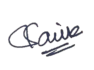

Saumik Nirmal Hathi
SAP Fiori, UI5 Developer
Summary
-
I'm applying for this position since I'm seeking a shift in my career
ideally out of SAP Fiori.
- Open to relocation and shifts.
-
I am certain that I will self-skill up myself for the position during
the notice period.
-
I am sincerely seeking a domain change with a market-standard salary.
Professional Experience
Project: Supporting Apps of
Dow Jones [Jan 2023
till date]
- Bug Analysis and Resolution: Expert in debugging and troubleshooting issues within existing
applications.
- Stakeholder Engagement: Engage with management and staff to determine and meet system
requirements.
- User Communication: Communicate with users to track additional specifications and features.
-
Cross-Functional Collaboration: Collaborate seamlessly with cross-functional teams and developers.
- Incident Management: Track and manage user-reported incidents using SERVICE NOW.
- Tools Proficiency: Skilled in utilizing CHARM and Launchpad Designer for efficient workflow.
- SAP Expertise: Utilize SAP Note effectively and adept in creating tile catalog groups.
Project: Supporting Apps of
Applied
Materials [May 2022
till Dec 2022]
- Analyze Debug and Troubleshoot bugs in the existing apps
-
Given the overall stability of SAP Fiori and the rarity of tickets, my main role in the project
was focused on debugging ABAP programs.
Project:- SAP Agri Industry Cloud Solution with
SAP
LABS INDIA
[Nov 2020 till April 2022]
-
Developed SAP Fiori Elements Application using CDS and XML
annotations on SAP Business Application Studio.
- Debugging and handling of errors in SAP UI5 application
- Used JIRA to update the development and status of tasks
- GitHub for source code version management.
- Worked on automating test data on S/4 HANA using VB-SCRIPT.
-
Worked on creating auto data generation tool and create test data
-
Identifying relevant test cases and documenting them to ensure that
the system is reliable and error-free.
-
Utilizing Agile methodologies, such as scrum for effective resource
management, sprint planning, daily standup, and sprint review.
- Used Postman, Swagger, and SQL on HANADB
- Well-versed with ODATA.
Skills
- SAP Fiori
- SAP ABAP
- SQL on SAP HANA Cloud
Educational Qualification
Bachelor's in Computer - 2016-2020 - University of Pune
Graduated with a CGPA of 8.24 earning a First Class with Distinction.
Cover Letter
To Whom It May Concern,
I'm thrilled at the prospect of building and supporting cutting-edge
technology and solutions with truly global implications. With a
background in computer science and experience of two projects where I
got to interact with customers from a variety of countries, I have
acquired robust problem-solving and communication abilities.
In one of my positions, I was engaged in the whole life cycle of an
agricultural cloud project, from initial estimation through building and
deploying the finished product. I was specifically recognized for
consistently meeting deadlines and delivering customer deliverables on
time.
Thank you for your time and consideration. My work experiences, coupled
with my affinity to be curious and learn, would make me an asset to your
firm. I can be easily reached at your convenience by email
workwsaumik@gmail.com
or by telephone (+91)8879358212.
Sincerely,
